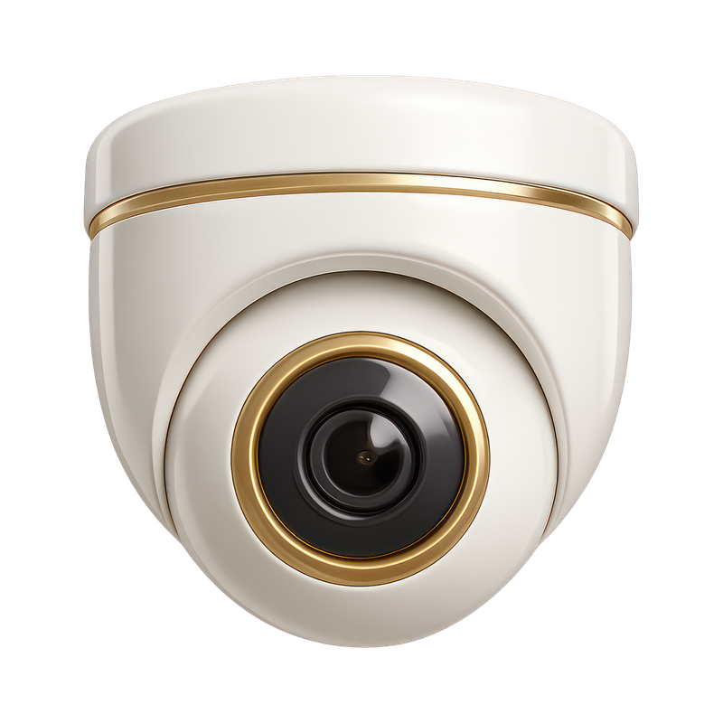
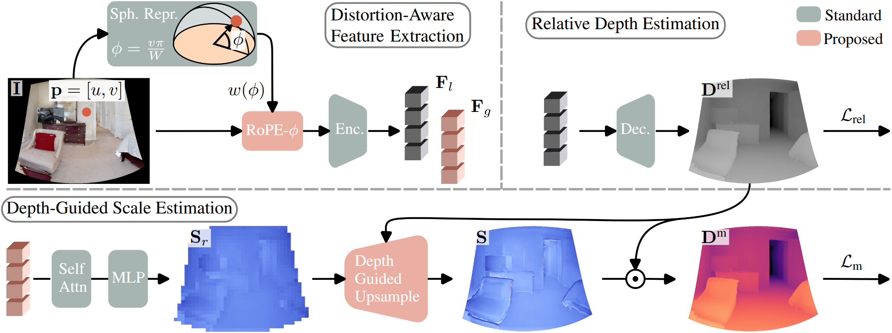
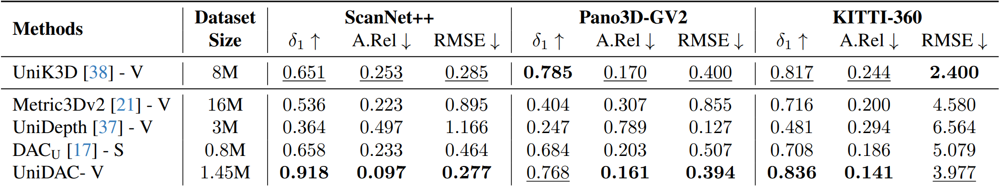

UniDAC is a unified monocular metric depth estimation framework that generalizes across diverse camera types, including perspective, fisheye, and 360° cameras, using a single model. Unlike prior approaches that require large-FoV training data or separate models for different domains, UniDAC achieves robust cross-camera generalization through a simple yet effective design. Key features include:
Monocular metric depth estimation (MMDE) is a core challenge in computer vision, playing a pivotal role in real world applications that demand accurate spatial understanding. Although prior works have shown promising zeroshot performance in MMDE, they often struggle with generalization across diverse camera types, such as fisheye and 360° cameras. Recent advances have addressed this through unified camera representations or canonical representation spaces, but they require either including large-FoV camera data during training or separately trained models for different domains. We propose UniDAC, an MMDE framework that presents universal robustness in all domains and generalizes across diverse cameras using a single model. We achieve this by decoupling metric depth estimation into relative depth prediction and spatially varying scale estimation, enabling robust performance across different domains. We propose a lightweight Depth-Guided Scale Estimation module that upsamples a coarse scale map to high resolution using the relative depth map as guidance to account for local scale variations. Furthermore, we introduce RoPE-φ, a distortion-aware positional embedding that respects the spatial warping in Equi-Rectangular Projections (ERP) via latitude-aware weighting. UniDAC achieves state-of-the-art (SoTA) in cross-camera generalization by consistently outperforming prior methods across all datasets.
UniDAC decouples metric depth estimation into relative depth and scale where relative depth captures local scene structure while scale models global, domain-specific variations. The estimated features of the input ERP image is split into local and global features, where the former is utilized for relative depth estimation and the latter for scale estimation. We predict a scale map to account for irregularities in the predicted relativ depth using the proposed Depth-Guided Scale (DGS) module. Additionally, we introduce distortion-aware positional encoding (RoPE-φ), which applies latitude-dependent weighting to RoPE for a better representation of the ERP geometry. The final metric depth is obtained by combining relative depth and scale, optimized via dedicated losses.

UniDAC is a unified model that achieves state-of-the-art cross-camera generalization, outperforming prior methods trained on perspective images including UniDepth, Metric3D-v2, and DAC across both indoor and outdoor datasets. Notably, UniDAC also outperforms UniK3D despite the latter being trained on large FoV images, highlighting the strong generalization capability of UniDAC.

@inproceedings